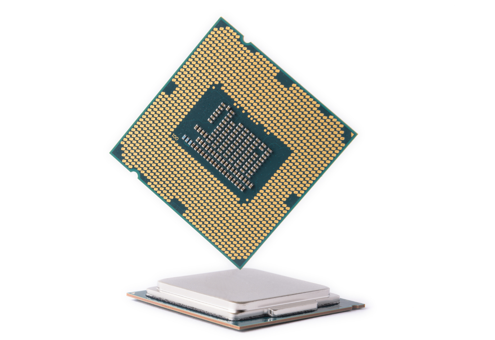
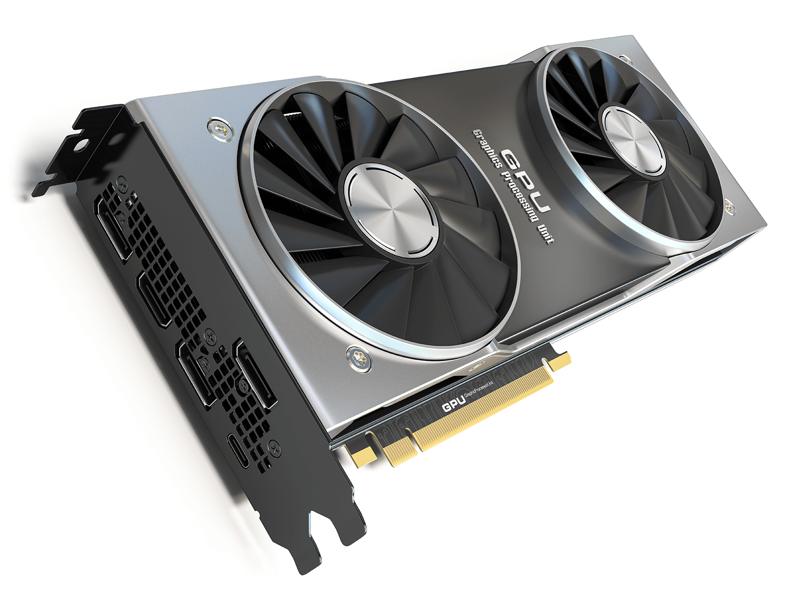
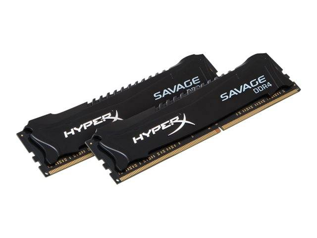
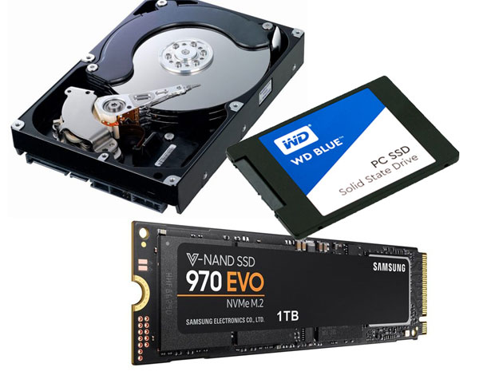
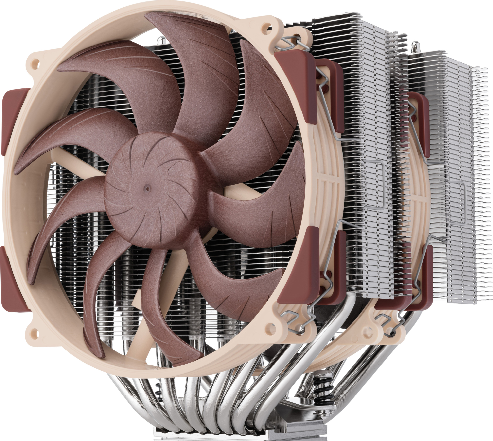

Vil du bygge en PC selv?
Nedenfor finner du de viktigste komponentene du trenger for å bygge PC-en din selv
Prosessor (CPU)
CPU-en er «hjernen» i datamaskinen.
Hva er den til? - Den håndterer kommandoer fra programmer og operativsystemet, utfører beregninger, kjører applikasjoner og administrerer alle prosesser.
Du trenger med andre ord ikke å betale for mye for en kraftigere prosessor hvis du ikke kommer til å bruke krevende programmer.
For eksempel videoredigering, strømming, spill og andre programmer som krever flertrådning.
Grafikkort (GPU)
GPU-en (grafikkortet) er ansvarlig for å vise grafikk.
Hva er den til? - Den behandler og gjengir grafikk, 3D-bilder, videoer og animasjoner.
Hvis du ikke skal spille spill eller jobbe med grafikk, trenger du ikke å betale for mye for et kraftig grafikkort, det er nok med iGPU (grafikkort integrert i CPU-en).
RAM (Random Access Memory)
RAM er den midlertidige lagringen av data som datamaskinen jobber med akkurat nå.
Hva er den til? - Enkelt sagt avgjør RAM-mengden hvor mange programmer som kan kjøres samtidig på en PC.
Hvis du ikke skal jobbe med store filer eller krevende programmer, trenger du ikke å betale for mye for mye RAM.
Intern Lagring
Intern Lagring er der filer, programmer og operativsystemet lagres. Det finnes i to typer:
- HDD (Hard Disk Drive) - billig, men treg. Egnet for lagring av filmer, arkiver, dokumenter
- SSD (Solid State Drive) - rask, gjør det raskere å laste inn Windows, spill og programmer
Hovedkort

Hovedkortet er ryggraden i en PC og forbinder alle komponentene (CPU, GPU, RAM, lagring osv.).
Er det nødvendig å betale for mye? - Du kan kjøpe et dyrt hovedkort hvis du skal «oppgradere» PC-en din i fremtiden,
eller hvis du vil ha de funksjonene du trenger, for eksempel PCIe 4.0-støtte, M.2 SSD, lydkort osv.
Strømforsyning

Strømforsyning (PSU - Power Supply Unit) forsyner alle komponentene i PC-en med strøm. Uten den vil ingenting fungere.
Er det nødvendig å betale for mye? - Hvis du ikke skal bruke en kraftig GPU eller CPU, trenger du ikke å betale for mye for en kraftig strømforsyning.
Men hvis du vil ha kraftige CPUer og GPUer som krever mye watt, trenger du en skikkelig PSU,
fordi en svak PSU ikke vil være i stand til å drive de kraftige PC-komponentene på grunn av mangel på watt.
P.S. - det anbefales på det sterkeste å ikke kjøpe billig kinesisk PSU, fordi på grunn av en dårlig PSU kan du «brenne» hele PC-en!
Kjøling til PC
Kjøling beskytter komponentene mot overoppheting, forlenger levetiden og sikrer stabil drift.
Er det nødvendig å betale for mye? - Hvis du ikke skal bruke en kraftig CPU eller GPU, trenger du ikke å betale for mye for kjøling.
Men hvis du skal bruke kraftige komponenter, kan du ikke spare på kjølingen.